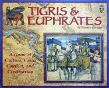
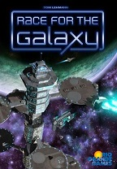
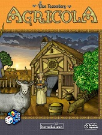
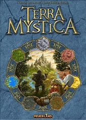
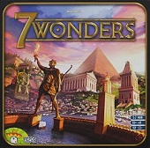

Chinese history and culture
I grew up in Quincy, Massachusetts which has a very high percentage of Chinese-Americans for its population. I have always been interested in Chinese history and culture and love to share what I have learned with people whenever possible.
Here is one of the first Chinese songs I liked when I started studying Chinese. It's called Full Bloom of Life by Wang Feng.
Capoeira
Capoeira is an afro-brazilian martial art and dance. It has a lot of its roots buried in the history of slavery in Brazil and is as much a spiritual activity as it is a physical activity. I started learning capoeira when I began studying at UMass: Dartmouth. I took a ten-year hiatus after graduating, but recently started learning again thanks to a school in the boston area called Sinha Capoeira.
Here's a video from Sinha Capoeira's 2019 batizado:
Boardgames
I am a big fan of boardgames. I have been collecting them since I was in college and have over 75 boardgames in my collection. Here's a link to my boardgame collection.
| Rank | Game | Box | Description |
|---|---|---|---|
| 1 | Tigris & Euphrates |  | A brilliant game by Reiner Knizia that has you vying for control over ancient Mesopotamia. It has elements of luck, but a skillful player will (usually) prevail. |
| 2 | Race for the Galaxy |  | A futuristic deck builder by Tom Lehmann. I love how you get such a deep game from such a small deck of cards. I always travel with this game in my bag! |
| 3 | Agricola |  | An amazing worker-placement farming game by the great Uwe Rosenberg. It has so many cards there is near-infinite replayability. |
| 4 | Terra Mystica |  | A very unique game combining aspects of resource management and area control by Helge Ostertag and Jens Drögemüller. |
| 5 | 7 Wonders |  | A card drafting game by Antoine Bauza. I really love engine-building games and this one is great as it plays up to 7 players. |